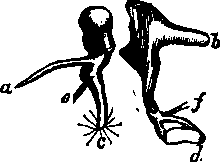

191. The Tympanic Ossicles
Description
This section is from the book "Animal Physiology: The Structure And Functions Of The Human Body", by John Cleland. Also available from Amazon: Animal Physiology, the Structure and Functions of the Human Body.
191. The Tympanic Ossicles
The Tympanic Ossicles, three in number, the malleus, incus, and stapes, make a communication between the membrana tympani and the internal ear. The ossicles termed malleus and incus, from a fancied resemblance to a hammer and anvil, lie one in front of the other, the malleus foremost. The malleus has at its upper part a head, which articulates behind with the incus; and descending from the head is the handle, or manubrium, the extremity of which we have already seen to be connected with the membrana tympani Another process, processus gracilis, springs from below the head of the malleus, and passes forwards to be attached in a fissure of the temporal bone. The incus articulates by its thickest part with the malleus, and sends out two processes, one of which projects horizontally backwards, and has a ligamentous attachment in front of the mastoid cells, while the other, which is longer, descends vertically, and is turned this country and on the continent. In such a work as this it is sufficient to mention two objections to that idea; namely, that it is anatomically impossible, and that I have myself, as elsewhere recorded, actually seen through a perforation in the palate, the extremity of the Eustachian tube lying open when the throat was at rest, and closed in the act of swallowing. And it is to be remembered that it is only about the extremity of the tube that there can be a question; since no one doubts the patency of the osseous part, and Rudinger has demonstrated a permanently patent canal in the first part of the cartilagin. pus portion. inwards at its extremity to articulate with the third ossicle, the stapes. The stapes, as its name implies, is shaped exactly like a stirrup; it lies horizontally, its head articulating with the incus, and two branches extending inwards to its base, which is fixed by means of a ligament which surrounds it in the fenestra ovalis. Thus, it will be perceived, the tympanic ossicles are suspended between the tip of the processus gracilis of the malleus in front, and the extremity of the horizontal process of the incus behind, and are capable of a swinging motion round the line joining those points, of such a description that the descending process of the incus swings outwards or inwards with the handle of the malleus, and communicates its movement to the stapes.
Fig. 128. Tympanic Ossicles op Right Ear. a, Processus gracilis of malleus; b, posterior process of incus; the line ab is the axis of rotation. When c, the handle of the malleus, with fibres of the membrana tympani radiating from its extremity, is pulled inwards by e, the tendon of the tensor tympani, the incus likewise rotates and pushes d, the stapes, in at the fenestra ovalis; f, tendon of stapedius.
192. This is precisely the principal movement which takes place, and it is accomplished by two muscles. The tensor tympani muscle arises from the cartilaginous wall of the Eustachian tube, and entering the tympanum, is confined by a ledge of bone to the inner wall, till it is opposite the position of the malleus; it then becomes tendinous, and stretches across the cavity, to be attached near the base of the handle of that bone, pulling it inwards, and so increasing the concavity of the membrana tympani, and putting that membrane on the stretch. An antagonistic muscle, the laxator tympcmi, less distinct, arises likewise from the Eustachian tube, and is attached to the malleus above the level of the processus gracilis; thus pulling the head of the bone inwards, and swinging the handle outwards. Now, as has been mentioned, the internal ear is filled with liquid, which is incompressible; and it is surrounded with unyielding walls, save only at the two fenestræ; when, therefore, the tensor tympani pulls the handle of the malleus inwards, so as to make the membrana tympani tense, and the incus, partaking of the movement of the malleus, pushes the stapes in at the fenestra ovalis, it is plain that the whole contents of the internal ear are subjected to pressure, and that the secondary membrana tympani is likewise made tense. Thus a harmony is maintained between the condition of the primary membrana tympani and the internal ear.
But it might happen that the nervous structures of the ear might require protection from violent noise, as the retina requires protection from excessive light, and gets it by exciting a reflex action which contracts the pupil; for this reason there is what may be described as a safety-valve arrangement connected with the stapes. To the neck of the stapes a tendon is attached, which passes back through a foramen in the posterior wall of the tympanum, and, when the bone is broken open, is seen to be continued into a muscle called the stapedius muscle. This muscle, when it contracts, pulls the stapes into an oblique position in the fenestra rotunda, and interferes with the pressure of the incus, thus relieving the inner ear from a state of tension. Judging from the anatomy of the parts, we may conclude that this is a correct view of their function, and that the stapedius muscle is stimulated to contract by a reflex action, of which the auditory is the incident or sensory nerve.
Continue to: